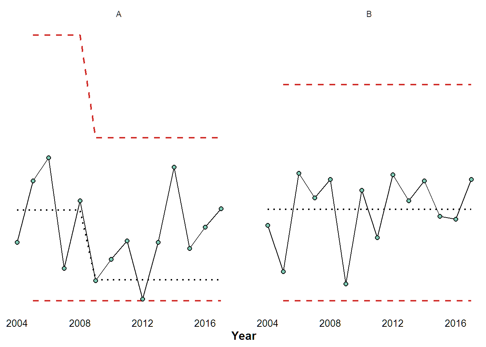

xmR.RmdXMR control charts are useful when determining if there are significant trends in data. XMR charts have two key assumptions: one is that the measurements of value happen over time, and the other is that each measurement of time has exactly one measurement of value.
Take careful thought about what you are trying to measure with XMR. Proportions work great, headcount is okay, costs over time don’t work well.
The arguments for xmr() are:
df: The dataframe containing the time-series data.
measure: The column containing the measure. This must be in a numeric format.
interval: The interval you’d like to use to calculate the averages. Defaults to 5.
recalc: Logical if you’d like it to recalculate bounds. Defaults to False for safety.
reuse: Logical: Should points be re-used in calculations? Defaults to False.
longrun: A vector of 2 to determine the rules for a long run. The first point is the ‘n’ of points used to calculate the new reference lines, and the second is to determine how many consecutive points are needed to define a longrun. Default is c(5,8) which uses the first 5 points of a run of 8 to recalculate the bounds.
shortrun: A vector of 2 to determine the rules for a short run. The first point is the minimum number of points within the set to qualify a shortrun, and the second is the length of a possible set. Default is c(3,4) which states that 3 of 4 consecutive points need to pass the test to be used in a calculation.
The data required for XMR charts take a specific format, with at least two columns of data - one for the time variable and another for the measurement.
Like so:
| Time | Measure |
|---|---|
| 2000 | 54 |
| 2001 | 56 |
| 2002 | 59 |
| 2003 | 65 |
| 2004 | 53 |
| 2005 | 64 |
| 2006 | 65 |
| 2007 | 61 |
| 2008 | 60 |
| 2009 | 51 |
| 2010 | 53 |
| 2011 | 53 |
| 2012 | 80 |
| 2013 | 76 |
| 2014 | 82 |
| 2015 | 77 |
| 2016 | 81 |
| 2017 | 85 |
If we wanted to use xmr() on this data would be written like this:
xmr_data <- xmr(df = example_data, measure = "Measure")And if we wanted the bounds to recalculate, we’d use this.
xmr_data <- xmr(df = example_data, measure = "Measure", recalc = T)Output data looks like this:
| Time | Measure | Central Line | Moving Range | Average Moving Range | Lower Natural Process Limit | Upper Natural Process Limit |
|---|---|---|---|---|---|---|
| 2000 | 54 | 57.400 | NA | NA | NA | NA |
| 2001 | 56 | 57.400 | 2 | 5.750 | 42.105 | 72.695 |
| 2002 | 59 | 57.400 | 3 | 5.750 | 42.105 | 72.695 |
| 2003 | 65 | 57.400 | 6 | 5.750 | 42.105 | 72.695 |
| 2004 | 53 | 57.400 | 12 | 5.750 | 42.105 | 72.695 |
| 2005 | 64 | 57.400 | 11 | 5.750 | 42.105 | 72.695 |
| 2006 | 65 | 57.400 | 1 | 5.750 | 42.105 | 72.695 |
| 2007 | 61 | 57.400 | 4 | 5.750 | 42.105 | 72.695 |
| 2008 | 60 | 57.400 | 1 | 5.750 | 42.105 | 72.695 |
| 2009 | 51 | 57.400 | 9 | 5.750 | 42.105 | 72.695 |
| 2010 | 53 | 57.400 | 2 | 5.750 | 42.105 | 72.695 |
| 2011 | 53 | 57.400 | 0 | 5.750 | 42.105 | 72.695 |
| 2012 | 80 | 79.333 | 27 | 12.333 | 46.527 | 112.140 |
| 2013 | 76 | 79.333 | 4 | 12.333 | 46.527 | 112.140 |
| 2014 | 82 | 79.333 | 6 | 12.333 | 46.527 | 112.140 |
| 2015 | 77 | 79.333 | 5 | 12.333 | 46.527 | 112.140 |
| 2016 | 81 | 79.333 | 4 | 12.333 | 46.527 | 112.140 |
| 2017 | 85 | 79.333 | 4 | 12.333 | 46.527 | 112.140 |
The only mandatory arguments are df, because the function needs to operate on a dataframe, and measure because the function needs to be told which column contains the measurements. Everything else has been set to what I believe is a safe and sensible default.
In our shop, we typically run the following rules. Since they are the default, there is no need to specify them directly:
xmr_data <- xmr(example_data, "Measure",
recalc = T,
interval = 5,
shortrun = c(3,4),
longrun = c(5,8))Feel free to play around with your own definitions of what a shortrun or longrun is.
xmr_data <- xmr(df = example_data,
measure = "Measure",
recalc = T,
#change the rule like so:,
interval = 4,
shortrun = c(2,3))The statistical differences between rules are slight, but each user will have different needs and it’s useful to be able to tune the function to those needs.
It is important to use a consistent definition of what a long/short run are. It wouldn’t be appropriate in one report to use one set of definitions for one dataset, and another set for a different dataset.
The xmr() function is handy for generating chart data as the output can be saved and used in other applications. But what about visualization within R?
xmr_chart() takes the output from xmr() and generates a ggplot graphic. This works well for reporting, but it also works great for quick diagnostics of your data.
The arguments for xmr_chart() are:
df: Output from xmr()
time: The column containing the time variable for the x-axis.
measure: The column containing the measure for the y-axis.
boundary_linetype: Type of line for upper and lower boundary lines. Defaults to “dashed”.
central_linetype: Type of line for central line. Defaults to “dotted”.
boundary_colour: Colour of line for upper and lower boundary lines. Defaults to “#d02b27”.
point_colour: Colour of points. Defaults to “#7ECBB5”.
point_size: Size of points. Defaults to 2.
line_width: Width of lines. Defaults to 0.5.
text_size: Size of chart text. Defaults to 9.
There are defaults set for most arguments, so all the user needs to supply are the column names for the Time and Measurement column unless they want some slight modification of the default chart.
xmr_chart(df = xmr_data,
time = "Time",
measure = "Measure",
line_width = 0.75, text_size = 12, point_size = 2.5)A work-flow that I use is to ‘pipe’ the output of xmr() directly into xmr_chart():
Simple datasets like those illustrated above are common, but how could we work with large datasets that have multiple factors?
Consider the following data. How would xmr() benefit the user in this case?
| Year | Variable | Measure |
|---|---|---|
| 2004 | A | 38 |
| 2005 | A | 78 |
| 2006 | A | 93 |
| 2007 | A | 21 |
| 2008 | A | 65 |
| 2009 | A | 13 |
| 2010 | A | 27 |
| 2011 | A | 39 |
| 2012 | A | 1 |
| 2013 | A | 38 |
| 2014 | A | 87 |
| 2015 | A | 34 |
| 2016 | A | 48 |
| 2017 | A | 60 |
| 2004 | B | 49 |
| 2005 | B | 19 |
| 2006 | B | 83 |
| 2007 | B | 67 |
| 2008 | B | 79 |
| 2009 | B | 11 |
| 2010 | B | 72 |
| 2011 | B | 41 |
| 2012 | B | 82 |
| 2013 | B | 65 |
| 2014 | B | 78 |
| 2015 | B | 55 |
| 2016 | B | 53 |
| 2017 | B | 79 |
The answer is by leveraging other R packages, namely the tidyverse.
You can install and load the tidyverse with:
#this installs many useful packages
install.packages("tidyverse")
#this just loads the ones we need
library(dplyr)
library(ggplot2)With dplyr, we can make use of powerful data-wrangling verbs without writing them into xmrr’s functions specifically:
select():- picks variables based on their names.filter():- picks cases based on their values.arrange():- changes the ordering of the rows.mutate():- adds new variables that are functions of existing variables.summarise():- reduces multiple values down to a single summary.group_by():- allows for group operations in the “split-apply-combine” conceptAlso loaded with dplyr is a powerful operator to chain functions together, called a pipe %>%.
With ggplot2, we take a modern approach to visualizing data. An up-to-date reference list of functions can be found here
This enables a number of verb-type functions for tidying, wrangling, and plotting data. This is how to use them alongside the xmr() and xmr_chart() functions.
Take our multiple factor data MFD - here is how to apply the xmr() function to certain groups within that data.
MFD_xmr <- MFD %>%
group_by(Variable) %>%
do(xmr(., "Measure", recalc = T))To obtain the following:
| Year | Variable | Measure | Order | Central Line | Moving Range | Average Moving Range | Lower Natural Process Limit | Upper Natural Process Limit |
|---|---|---|---|---|---|---|---|---|
| 2004 | A | 38 | 1 | 59.000 | NA | NA | NA | NA |
| 2005 | A | 78 | 2 | 59.000 | 40 | 42.750 | 0 | 172.715 |
| 2006 | A | 93 | 3 | 59.000 | 15 | 42.750 | 0 | 172.715 |
| 2007 | A | 21 | 4 | 59.000 | 72 | 42.750 | 0 | 172.715 |
| 2008 | A | 65 | 5 | 59.000 | 44 | 42.750 | 0 | 172.715 |
| 2009 | A | 13 | 6 | 13.667 | 52 | 34.667 | 0 | 105.880 |
| 2010 | A | 27 | 7 | 13.667 | 14 | 34.667 | 0 | 105.880 |
| 2011 | A | 39 | 8 | 13.667 | 12 | 34.667 | 0 | 105.880 |
| 2012 | A | 1 | 9 | 13.667 | 38 | 34.667 | 0 | 105.880 |
| 2013 | A | 38 | 10 | 13.667 | 37 | 34.667 | 0 | 105.880 |
| 2014 | A | 87 | 11 | 13.667 | 49 | 34.667 | 0 | 105.880 |
| 2015 | A | 34 | 12 | 13.667 | 53 | 34.667 | 0 | 105.880 |
| 2016 | A | 48 | 13 | 13.667 | 14 | 34.667 | 0 | 105.880 |
| 2017 | A | 60 | 14 | 13.667 | 12 | 34.667 | 0 | 105.880 |
| 2004 | B | 49 | 1 | 59.400 | NA | NA | NA | NA |
| 2005 | B | 19 | 2 | 59.400 | 30 | 30.500 | 0 | 140.530 |
| 2006 | B | 83 | 3 | 59.400 | 64 | 30.500 | 0 | 140.530 |
| 2007 | B | 67 | 4 | 59.400 | 16 | 30.500 | 0 | 140.530 |
| 2008 | B | 79 | 5 | 59.400 | 12 | 30.500 | 0 | 140.530 |
| 2009 | B | 11 | 6 | 59.400 | 68 | 30.500 | 0 | 140.530 |
| 2010 | B | 72 | 7 | 59.400 | 61 | 30.500 | 0 | 140.530 |
| 2011 | B | 41 | 8 | 59.400 | 31 | 30.500 | 0 | 140.530 |
| 2012 | B | 82 | 9 | 59.400 | 41 | 30.500 | 0 | 140.530 |
| 2013 | B | 65 | 10 | 59.400 | 17 | 30.500 | 0 | 140.530 |
| 2014 | B | 78 | 11 | 59.400 | 13 | 30.500 | 0 | 140.530 |
| 2015 | B | 55 | 12 | 59.400 | 23 | 30.500 | 0 | 140.530 |
| 2016 | B | 53 | 13 | 59.400 | 2 | 30.500 | 0 | 140.530 |
| 2017 | B | 79 | 14 | 59.400 | 26 | 30.500 | 0 | 140.530 |
And as you may be able to see in the data, the xmr() calculated on Measure BY Variable in one chained function instead of having to manually split the data and run the function multiple times. This is possible with an arbitrary number of factors, and leverages the speed of dplyr verbs.
Similarly, ggplot2 can be leveraged in plotting. Note that since xmr_chart() outputs a ggplot object, we can apply the regular ggplot2 functions to it and return a faceted chart rather than filtering the chart and making two.
MFD %>%
group_by(Variable) %>%
do(xmr(., "Measure", recalc = T)) %>%
xmr_chart("Year", "Measure", line_width = 0.75, text_size = 12) +
facet_wrap(~Variable) +
scale_x_discrete(breaks = seq(2004, 2017, 4))